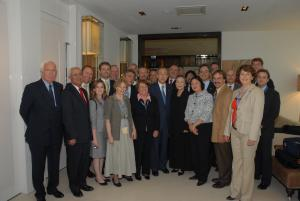

Home / News & Events / Archive / Business Schools to Advance Corporate Citizenship through the Principles for Responsible Management Education
(New York, 13 July 2007) – The Principles for Responsible Management Education, launched at the 2007 Global Compact Leaders Summit on 5 July in Geneva, provide a framework for academic institutions to advance corporate social responsibility through the incorporation of universal values into curricula and research. The principles have been developed by an international task force consisting of sixty deans, university presidents and official representatives of leading business schools.
Co-convened by the United Nations Global Compact, the Association to Advance Collegiate Schools of Business (AACSB International), the European Foundation for Management Development (EFMD), the Aspen Institute’s Business and Society Program, the Globally Responsible Leadership Initiative (GRLI), and Net Impact, the principles were unveiled to UN Secretary-General Ban Ki-moon and hundreds of leaders representing business, civil society, government, and academia from around the world.
“The Principles for Responsible Management Education have the capacity to take the case for universal values and business into classrooms on every continent,” said UN Secretary-General Ban Ki-moon in his closing remarks at the 2007 Global Compact Leaders Summit on 6 July.

Secretary-General Ban Ki-moon with members of the academic delegation (Global Compact/Guaresi).
"Business students and educators care deeply about social responsibility as noted in AACSB International's ‘Peace through Commerce’ report. The principles will advance the impact of business schools and graduates on future corporate social responsibility," said John Fernandes of AACSB International.
John Fernandes, CEO of AACSB International presenting the PRME at the Leaders Summit in Geneva (Global Compact/Virot).
“Globalization not only needs companies that can decisively contribute to more sustainable and inclusive markets. It also needs a new generation of managers and leaders who are up to that task. The PRME initiative, as a global call, will be signed on by an increasing number of academic institutions,” said Dr. Manuel Escudero, Head of Academic Initiatives of the UN Global Compact, when referring to the significance of the PRME.
Secretary General Ban Ki-Moon receives the
Principles for Responsible Management
Education from Dr. Angel Cabrera,
Chair of the PRME Taskforce (Global Compact / Guaresi).
The principles were presented by an international delegation that included:John Fernandes, President and Chief Executive Officer
of AACSB International, Gerard Van Schaik, President of
EFMD, Manuel Escudero, Head Networks and Academic
Initiatives, UN Global Compact Office, Angel Cabrera,
President of Thunderbird School of Global Management, David
Saunders, Dean of Queen's School of Business, Anders
Aspling, Secretary General of the Globally Responsible Leadership
Initiative, Carolyn Woo, Dean of the Mendoza College of
Businessat University of Notre Dame, Mark Drewell, Chair
of the Globally Responsible Leadership Initiative, Pierre
Tapie, Dean and President of ESSEC, Peter Lacy,
Executive Director of the European Academy of Business in Society,
Danica Purg, President of the IEDC-Bled School of
Management, Ira Jackson, Dean of the Peter F. Drucker and
Masatoshi Ito Graduate School of Management, Bernardo Barona
Zuluaga, Dean of the Facultad de Ciencias Economicas Universidad
Javeriana Sede Cali, Edgard Girard, Dean and Chief
Executive Officer of Groupe INSEEC, Labib Khadra,
President of the German-Jordanian University, Joaquín
Garralda, Associated Dean of the IE Business School,
Walter Baets, Associate Dean for Research of the Euromed
Marseille - Ecole de Management, Rolph Balgobin,
Executive Director of the Arthur Lok Jack Graduate School of Business,
Malcolm McIntosh, Director of the Futures Institute at
Coventry University, David Cooperrider, Chairman of the
Center for Business as Agent of World Benefit at Weatherhead School of
Management, Norman Arruda Filho, Director of the Getulio Vargas
Foundation, Patricia Werhane, Director Institute for
Business and Professional Ethics at the DePaul University, Gregory
Unruh, Director of the Lincoln Center for Ethics in International
Management at Thunderbird School of Global Management, Henri
Claude de Bettignies of the China Europe
International Business School, Sandra Waddock of Boston
College - Carroll School of Business, Mitsuhiro Umezu of
Keio University, Semra Feriha Ascigil of the Middle East
Technical University, Ingo Pies of the Martin-Luther
University Halle-Wittenberg, Josep M. Lozano of ESADE,
Claudio Boechat of Fundacao Dom Cabral, Amy
Memon of AACSB International, Simon Pickard of
the European Academy of Business in Society, Raghu Ram
Tata of the XLRI Jamshedpur - School of Management and Human
Resources, Kernaghan Webb of Ryerson University,
Carol Sunnucks of Thunderbird School of Global
Management, Jenik Radon of Columbia University,
Anthony Nguyen of Net Impact, and Atle
Midttun of the Norwegian School of
Management. |
Click here to download the Principles.
Contact:
Dr. Manuel Escudero
Head Networks and Academic Initiatives
UN Global
Compact Office
escuderom@un.org